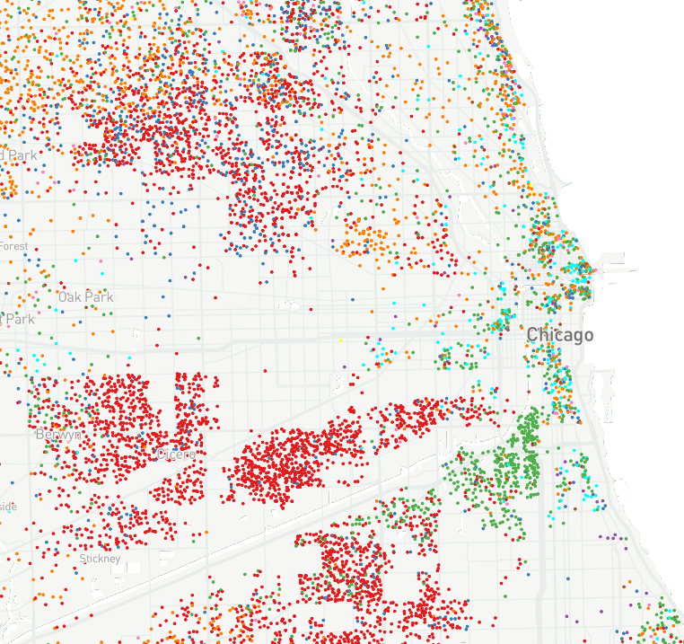
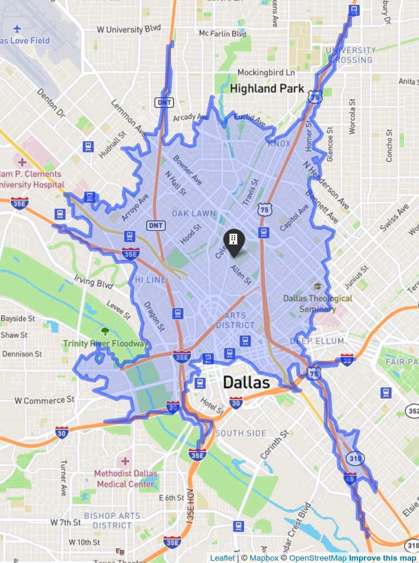

GIS, demographics, and data science consulting
Welcome to Walker Data, the data science consulting website of Kyle Walker. Please reach out to kyle@walker-data.com for consulting assistance with the following topics:
- Demographic analysis / Census data
- Business and location intelligence
- Geographic Information Systems (GIS) and spatial data science
- Training in the R and Python programming languages

Expert demographics, Census, and data science advisory

Sophisticated location intelligence solutions for your business
R and GIS training from the developer of the tidycensus R package

Read the book Analyzing US Census Data: Methods, Maps, and Models in R
To receive on-going updates from Walker Data, consider signing up for the Walker Data mailing list: